Agujeros negros: espacio-tiempo curvado y ondas gravitacionales
El remanente extremo de las estrellas más masivas. Qué es un agujero negro (y qué no es), el horizonte de eventos y el radio de Schwarzschild, cómo se detecta lo que no emite luz —binarias con rayos X, microlentes— y la revolución de LIGO: escuchar el espacio-tiempo con láseres kilométricos.
Esta clase cierra el curso de Astrofísica de Estrellas con el objeto más extremo del cementerio estelar: el agujero negro. Cuando el núcleo colapsado de una estrella muy masiva supera las ~3 masas solares, ninguna presión conocida puede detener su colapso y se forma una singularidad. Para entenderla hay que cambiar de marco: dejar la gravedad newtoniana y pensar en espacio-tiempo que se curva. Con ese lenguaje aparecen el horizonte de eventos, el radio de Schwarzschild, y una pregunta muy de ingeniería: ¿cómo se detecta un objeto de pocos kilómetros, a miles de años luz, que no emite ninguna luz? La respuesta combina dinámica orbital (Kepler), señales en rayos X, lentes gravitacionales y —desde 2015— interferometría láser capaz de medir deformaciones de una parte en 10²¹.
Repaso: la masa decide el remanente
El parámetro más importante de la astrofísica estelar… y uno de los más difíciles de medir.
La clase abre retomando la tabla-resumen del módulo: la masa inicial de una estrella determina cuánto vive, cuánto brilla, qué elementos químicos fabrica, cómo muere y qué remanente deja. Irónicamente —recalcó la profesora— la masa es, junto con la edad, uno de los parámetros más difíciles de medir de una estrella. Es el hilo conductor de todo el curso.
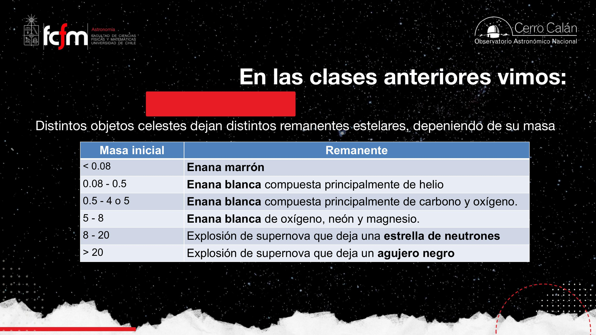
¿Qué detiene (o no) el colapso?
- Enana blanca: presión degenerada de electrones.
- Estrella de neutrones: presión degenerada de neutrones.
- Agujero negro: nada. Si el núcleo colapsante supera ~3 M☉, ninguna presión conocida frena el colapso.
Las ~3 M☉ son la masa del núcleo de la estrella, no de la estrella completa: sobre el núcleo hay capas y capas de material que salen expulsadas en la supernova. Lo que colapsa es el núcleo. Además, ese límite de 3 M☉ (visto en la clase anterior para estrellas de neutrones) sigue en debate: es un valor aproximado.
Espacio-tiempo: la malla elástica
Einstein: espacio y tiempo no son independientes.
Antes de analizar el agujero negro como objeto astronómico hay que instalar el lenguaje de la relatividad general. La idea central de Einstein: el espacio no es independiente del tiempo; existe una única entidad, el espacio-tiempo. Cuando el espacio se estira o contrae, el tiempo también se dilata o comprime. Costó mucho instalar esta idea, porque intuitivamente el espacio eran «nuestras tres dimensiones X, Y, Z» y el tiempo algo que pasaba por separado.
Más que «el tiempo es la cuarta dimensión», piénsalo como capturas de pantalla: voy tomando screenshots del espacio X, Y, Z y esa acumulación de placas —de timestamps— es la dimensión temporal. Los eventos ocurren en esas distintas capturas del espacio.
El modelo mental de trabajo es la malla elástica (la sábana estirada sobre una mesa) con una hormiga caminando encima. La hormiga representa un fotón: la luz siempre intenta viajar por el camino más corto, en línea recta si puede.
- Sin masa sobre la malla: la hormiga camina en línea recta. No pasa nada.
- Masa pequeña (una pluma, un grano de arena): la deformación es imperceptible; la hormiga sigue derecho.
- Masa grande (la bolita de acero que propuso el curso): la malla se hunde. Lejos de la deformación el camino sigue siendo ~recto, pero cerca, la hormiga se ve obligada a seguir la curvatura — es el nuevo espacio en que circula; no puede levitar por encima.
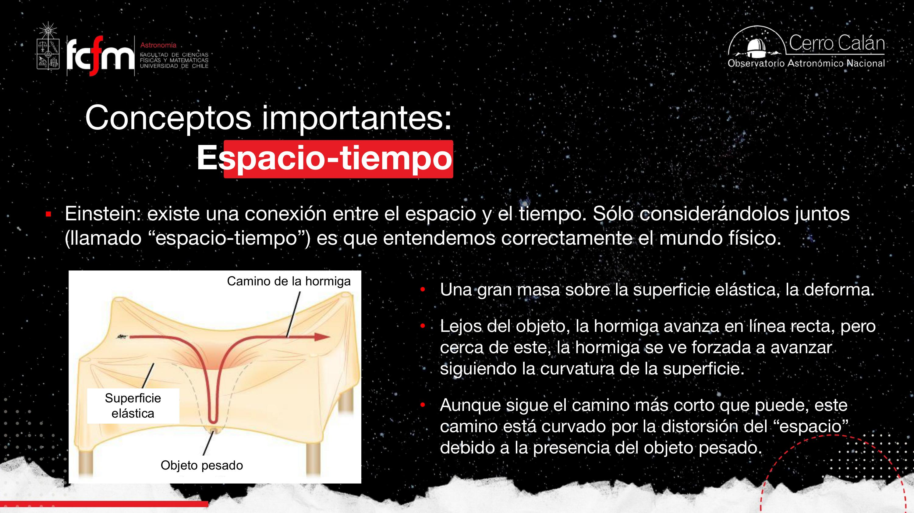
El «camino más corto en un espacio deformado» es literalmente un problema de ruta óptima con métrica no uniforme: como Dijkstra sobre un grafo donde el costo de las aristas cambia según la región. La masa no «tira» del paquete; reescribe la tabla de costos, y el camino óptimo resultante deja de ser la línea recta. (El nombre técnico de estos caminos óptimos es geodésicas — término nuestro, no usado en la clase.)
La luz en un espacio-tiempo curvo
El eclipse de 1919, el retraso de la sonda Viking y un error conceptual común.
Si la luz sigue el camino más corto y el espacio-tiempo cerca de grandes concentraciones de materia (grandes potenciales gravitacionales) está curvado, entonces la luz puede moverse en trayectorias curvas. Nadie le creía a Einstein hasta que se observó un eclipse solar en 1919 —desde Brasil y África, según relató la clase— y se confirmó la desviación predicha.
Segunda evidencia: la sonda Viking. Cuando, vista desde la Tierra, la sonda quedó casi detrás del Sol, sus señales de radio llegaron con retraso: en vez de recorrer una recta, la señal tuvo que atravesar la región donde el espacio-tiempo está fuertemente curvado por el Sol, recorriendo un camino más largo. Conociendo la distancia y la velocidad de la luz, el retraso extra es medible y delata la curvatura.
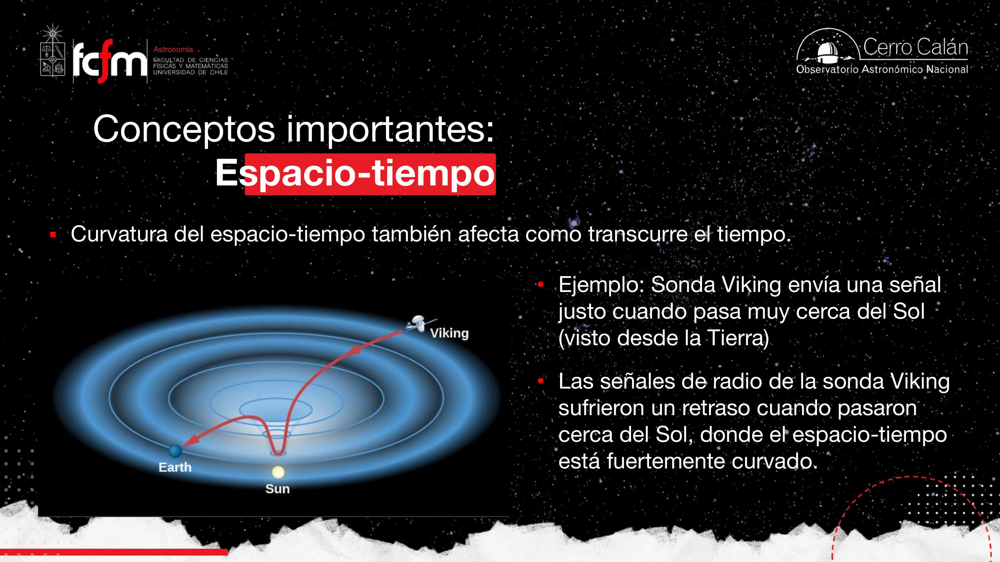
Concepto erróneo: «la gravedad atrae la luz»
La gran gravedad de un objeto denso no atrae la luz: curva el espacio-tiempo, y la luz simplemente sigue el camino de ese espacio curvado. La luz siempre «viaja en línea recta» — pero en un espacio-tiempo curvado, las líneas rectas están curvadas.
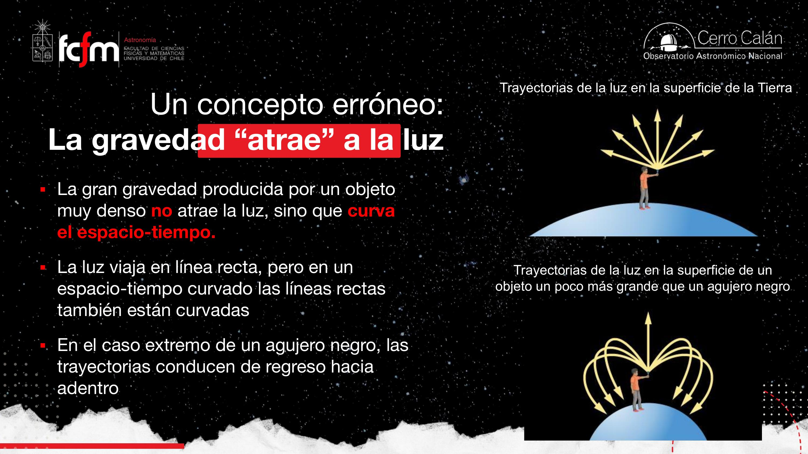
Velocidad de escape: la definición clásica
De 11 km/s en la Tierra a «más rápido que la luz» en un agujero negro.
La velocidad de escape es la velocidad que necesito para librarme de la atracción gravitacional de un objeto. Es la velocidad de despegue de los cohetes en la Tierra. La secuencia de la clase muestra cómo escala con la compacidad del objeto:
| Objeto | vescape | Fracción de c |
|---|---|---|
| Tierra | ~11 km/s | 0.004% |
| Sol | ~618 km/s | 0.2% |
| Enana blanca (1 M☉) | ~5.500 km/s | ~2% |
| Estrella de neutrones (1 M☉) | ~125.000 km/s | ~42% |
| Agujero negro | > 300.000 km/s | > 100% ⇒ nada escapa |
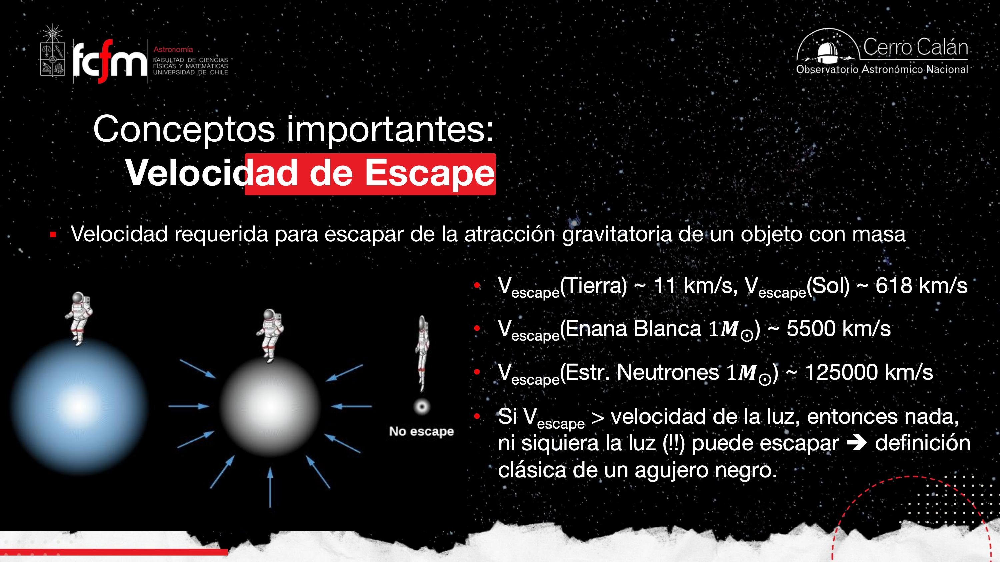
La luz viaja a la velocidad de la luz y no puede ir más rápido. Si escapar exige superar c, la luz tampoco sale. El agujero negro tiene masa y propiedades físicas —hay materia ahí—, pero no hay forma de recibir luz (información electromagnética) desde el objeto: por eso no vemos nada.
Nota la escala logarítmica del fenómeno: cada fila de la tabla multiplica la velocidad de escape por ~10–50 manteniendo la misma masa (~1 M☉) y encogiendo el radio. Es el mismo dato comprimido en un contenedor cada vez más chico; la métrica que explota no es la masa sino la densidad. Como pasar de disco a RAM a caché: mismo contenido, otro régimen físico.
Horizonte de eventos y radio de Schwarzschild
La superficie de no retorno: 3 km para una masa solar.
El horizonte de eventos —también llamado radio de Schwarzschild— es un límite en el espacio-tiempo alrededor del agujero negro (nota: la clase enfatizó que ya no hablamos de «distancia» a secas, sino de espacio-tiempo). Superado ese límite, no hay vuelta atrás. La definición física más correcta: los eventos al interior del horizonte no pueden tener ningún efecto sobre el mundo exterior — dejan de interactuar con lo que está afuera.
Geométricamente no es un anillo: es una superficie (en tres dimensiones) alrededor del agujero negro, donde la curvatura del espacio-tiempo es tal que ni siquiera la luz puede escapar.
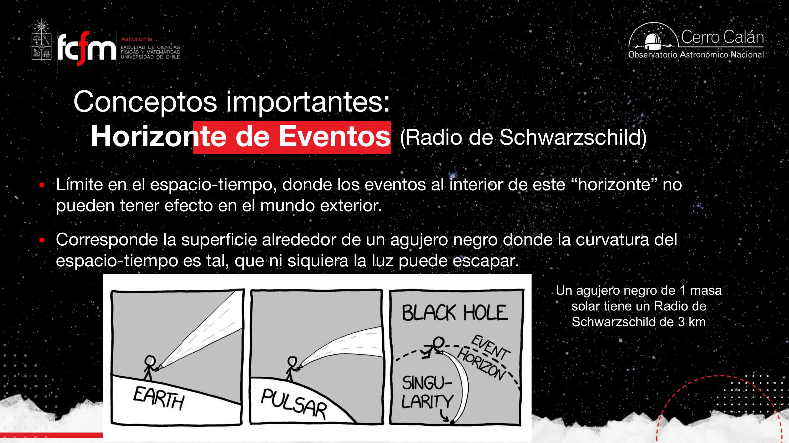
Una estrella de neutrones de ~1 M☉ medía ~10 km de radio (clase anterior). El agujero negro de la misma masa cabe dentro de 3 km: toda una masa solar en menos que el radio de una ciudad pequeña. Dentro del horizonte quedan las preguntas abiertas —¿qué pasa con la información que cae?— que esta clase, honestamente, no va a resolver.
Un estudiante aportó la traducción del apellido: Schwarzschild significa «escudo negro» en alemán (apellido compuesto: schwarz = negro, Schild = escudo). «Nació para esto», bromeó la clase. Y sobre Interestelar: el planeta de la película orbita fuera del horizonte de eventos — por eso puede existir; dentro del horizonte no podría.
Compacidad, no masa
Segundo concepto erróneo: «la masa es lo que importa».
Si un agujero negro de 1 M☉ deforma tanto el espacio-tiempo… ¿por qué el Sol, con la misma masa, no produce los mismos efectos? Porque a igual masa, la curvatura lejana es la misma. La diferencia está en el volumen:
- El Sol es grande: «llena» el embudo de deformación con su propio cuerpo. Solo puedes acercarte hasta su superficie; más adentro, ya estás dentro del Sol.
- El agujero negro está comprimidísimo: el embudo sigue y sigue hacia abajo, y puedes «caer» mucho más cerca del centro, donde la deformación es extrema.
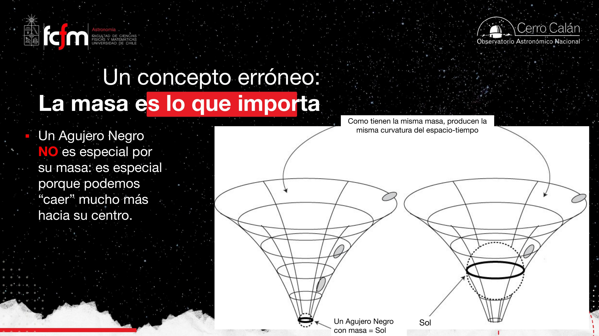
Todo objeto con masa deforma el espacio-tiempo: tú también. El movimiento de tu lápiz al escribir genera (minúsculas) deformaciones; alrededor de cada uno de nosotros hay potenciales de gravedad. La profesora matizó: a nuestra escala el efecto es despreciable, pero conceptualmente es la misma física.
Formación y ejemplos reales
Del colapso del núcleo a Gaia BH1, Gaia BH3 y Cygnus X-1.
La receta de formación es la misma de la clase anterior, llevada al extremo:
- Estrella de alta masa agota su combustible; el núcleo colapsa y se produce la explosión de supernova (el rebote expulsa las capas externas).
- Pero esta vez la presión degenerada de neutrones ya no puede soportar el colapso del núcleo (> ~3 M☉).
- Nada lo detiene: se forma una singularidad — masa y rotación compactadas a un tamaño ínfimo.
Como el agujero negro «en sí» es inmedible directamente, se usa como tamaño de referencia el radio de Schwarzschild — hasta dónde llega su influencia de no-retorno. Para agujeros negros estelares: pocos kilómetros.
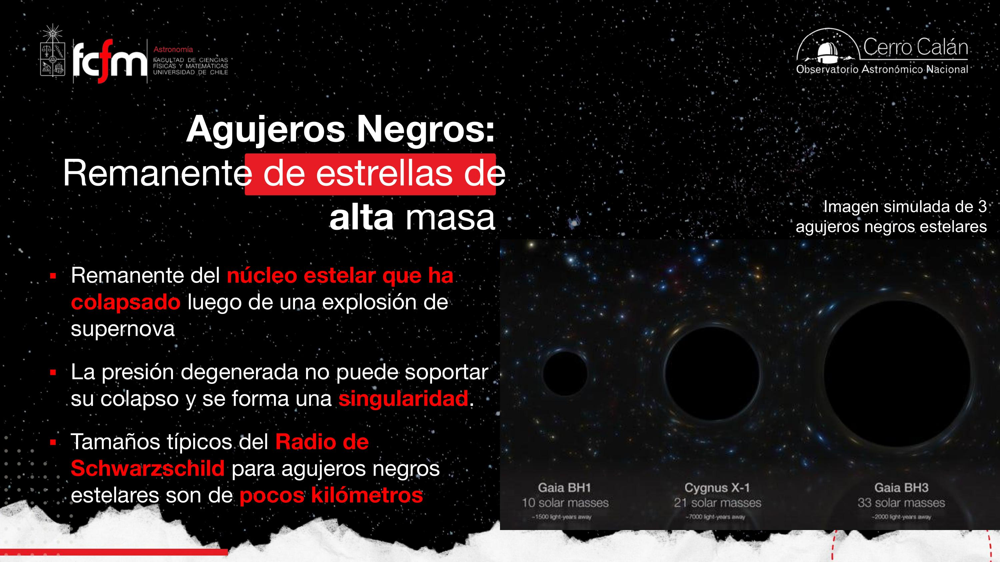
No hay ningún agujero negro tan cerca de nosotros como para correr peligro: los más cercanos conocidos están a ~1.500 años luz. Y sí: la banda Rush tiene una canción sobre Cygnus X-1 — por eso la profesora siempre lo deja para el final de la lista.
Detección: binarias, Kepler y rayos X
¿Cómo buscar algo pequeño, lejano y que no emite luz? Por sus efectos.
El problema de ingeniería: un objeto de unos pocos km, a miles de años luz, del cual la luz no escapa. La detección más común es indirecta: a través del efecto de su gravedad —que es enorme— sobre una estrella compañera en un sistema binario.
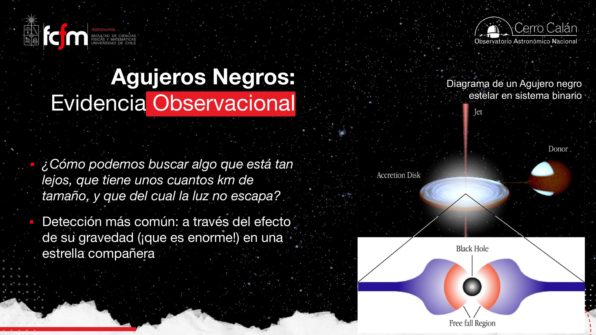
El protocolo de dos «checks»
- Check 1 — masa dinámica. La estrella visible «baila solita»: orbita en torno a un centro de masa con un compañero invisible. Con las leyes de Kepler (y velocidades radiales vía efecto Doppler en su espectro) se calcula la masa del compañero. Si da > 3 M☉ y no se ve, no puede ser estrella normal ni estrella de neutrones: candidato a agujero negro.
- Check 2 — rayos X. Si además hay material moviéndose cerca de la velocidad de la luz en un disco de acreción, la fricción lo calienta a más de 100 millones de K ⇒ emisión intensa en rayos X (domina por sobre el óptico, por la velocidad y temperatura del material).
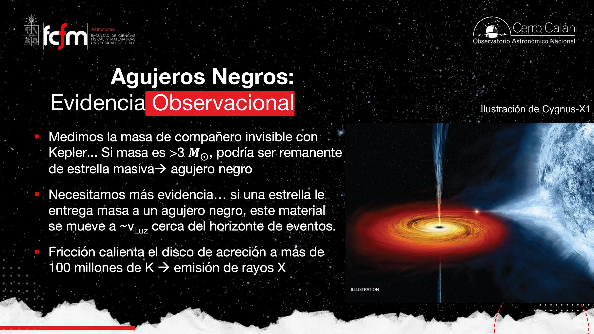
El disco rota: en todo momento hay gas acercándose a nosotros y gas alejándose. En espectroscopía y en velocidades radiales eso produce variabilidad — corrimientos Doppler cambiantes en las líneas. Exactamente lo que se observa en Cygnus X-1.
Es inferencia por variables latentes: el agujero negro nunca aparece en los datos; se reconstruye a partir de sus efectos observables (órbita de la compañera, espectro de rayos X, Doppler). Como diagnosticar un proceso invisible por sus huellas en las métricas del sistema: si el CPU está saturado y ningún proceso visible lo explica, algo no listado lo está consumiendo — y puedes estimar «cuánto pesa» por el efecto que produce.
Microlentes gravitacionales
El agujero negro como lupa que cruza la línea de visión.
Otra vía de detección, sin compañera de por medio: los microlentes gravitacionales. El prefijo «micro» distingue el efecto de los agujeros negros estelares del de los grandes lentes gravitacionales (cúmulos de galaxias), y los efectos son distintos:
- Lente gravitacional (cúmulos de galaxias): deforma las imágenes de fondo — arcos, «gusanitos espaciales», anillos de Einstein: luz estirada de otros objetos.
- Microlente (objeto de masa estelar): amplifica como una lupa la luz del objeto de fondo. Estoy monitoreando una estrella lejana; un agujero negro cruza entre mi telescopio y ella; la luz de la estrella sube, alcanza un máximo y vuelve a su nivel normal cuando el cruce termina.
Cualquier objeto másico puede hacer de microlente, no solo agujeros negros. Si el objeto que cruza tiene planetas, la curva de amplificación muestra la subida principal más una segunda «colita» de amplificación producida por el planeta. Es uno de los métodos de detección de exoplanetas.
La firma de un microlente es un transiente en una serie temporal de fotometría: subida suave, peak, bajada simétrica. Detectarlo es un problema clásico de monitoreo de señales — matched filtering sobre millones de curvas de luz, distinguiendo el evento del ruido y de otros transientes (estrellas variables, por ejemplo).
Ondas gravitacionales: binarias que se fusionan
El espacio-tiempo como medio que transporta energía.
La relatividad general predice que en sistemas binarios de objetos compactos (agujeros negros y/o estrellas de neutrones) hay pérdida de energía orbital y momento angular por radiación gravitacional: la energía se transfiere a deformaciones del espacio-tiempo que viajan como ondas. La consecuencia es una espiral de muerte con cuatro actos:
- Inspiral: los dos objetos orbitan y emiten ondas gravitacionales; la órbita pierde energía y se encoge.
- Chirp: al acercarse giran más rápido (conservación del momento angular) ⇒ la frecuencia de las ondas aumenta junto con su amplitud.
- Merger: la separación se hace mínima y los objetos se fusionan, liberando una cantidad enorme de energía gravitacional — el peak de la señal.
- Ringdown / calma: queda un solo agujero negro; las ondas dejan de emitirse y la señal se apaga.
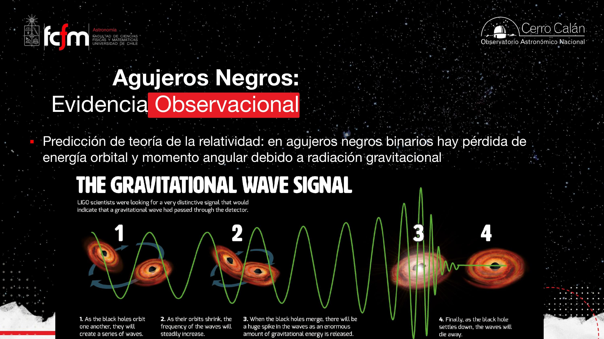
La suma de masas no es lineal
LIGO: medir 10⁻²¹ con láseres
Interferometría kilométrica y el Nobel de Física 2017.
LIGO (Laser Interferometer Gravitational-Wave Observatory) usa interferometría para detectar el paso de una onda gravitacional que distorsiona el espacio-tiempo. El diseño, contado en la clase:
- Un láser se emite hacia un splitter (divisor de haz) que lo separa en dos caminos.
- Cada mitad recorre un brazo kilométrico perpendicular al otro, rebota en un espejo al final y vuelve.
- Como el láser viaja a la velocidad de la luz y los caminos son fijos, sé exactamente cuánto demora ida y vuelta en cada brazo.
- Si pasa una onda gravitacional, deforma los brazos (¡y a nosotros también!): los caminos se «descuadran» y aparece una diferencia de fase entre ambos haces. Esa interferencia es la detección.
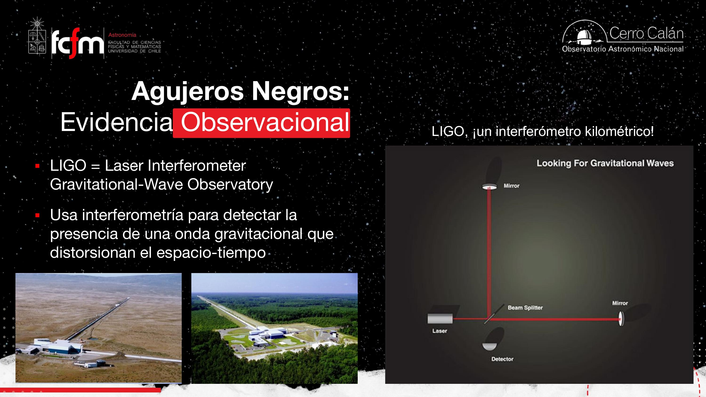
¿Por qué dos detectores?
Porque se miden deformaciones (strain) de ~10⁻²¹: un camión pasando cerca, un temblor, mueve los láseres. Pero un camión mueve un detector, no los dos. La validación exige:
- Ver la misma señal en ambos detectores, y
- con el desfase temporal correcto: la onda viaja a velocidad finita, así que a 3.000 km de distancia debe llegar a un detector unos milisegundos antes que al otro. Se cumple en todas las detecciones confirmadas.
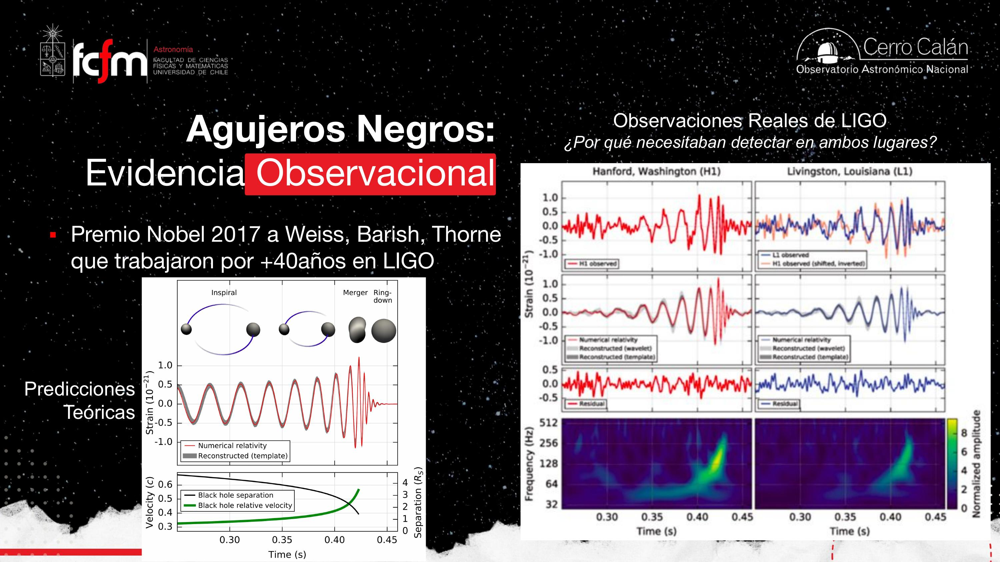
Tras más de 40 años de trabajo en LIGO: Rainer Weiss (construcción de la instrumentación), Barry Barish (articulación de la colaboración internacional a gran escala) y Kip Thorne (desarrollo teórico y análisis). Instrumentos a gran escala para medir cambios microscópicos: inferiores al tamaño de un núcleo atómico.
Dos detectores lejanos con exigencia de coincidencia y desfase esperado es un esquema clásico de rechazo de falsos positivos por correlación: como replicar un sensor en dos data centers y aceptar solo eventos que aparecen en ambos con la latencia física correcta. El ruido local (camiones, sismos) no se replica; la señal global sí. Con strain de 10⁻²¹, el problema es esencialmente relación señal-ruido extrema + filtrado por templates teóricos.
Cementerio estelar, mass gap y kilonovas
Decenas de fusiones detectadas, un hueco inexplicado y una fábrica de oro.
Con los interferómetros (LIGO y Virgo, otro experimento) se han detectado decenas de eventos de fusión: agujero negro + agujero negro, estrella de neutrones + estrella de neutrones, y mixtos. El gráfico del «cementerio estelar» conecta con flechas cada par fusionado con su producto — y confirma que las masas no se suman linealmente.
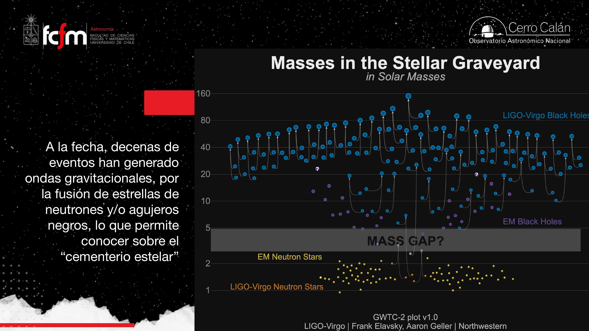
La animación mostrada corresponde al evento GW230529: la coalescencia de un agujero negro (punto negro/gris) con una estrella de neutrones (punto naranjo), con la forma de onda graficada abajo — la frecuencia aumenta hasta la fusión y luego calma. También se aclaró: los dos agujeros negros «solitos» del gráfico no son producto de fusión detectada, aunque —buena pregunta de un estudiante— podrían venir de fusiones anteriores no observadas.
Kilonovas: nucleosíntesis más allá de las supernovas
Al fusionar dos estrellas de neutrones se produce una explosión bautizada kilonova (en la escala nova → supernova → kilonova). La energía liberada es descomunal, y aunque solo ~1% de la masa es expulsada (la gravedad retiene el resto), ese 1% sale tan violentamente que su material puede fusionarse y producir núcleos de elementos más pesados. El remanente depende de la masa: dos estrellas de neutrones muy masivas dejan probablemente un agujero negro; si no, una estrella de neutrones más masiva. En fusiones estrella de neutrones + agujero negro, la estrella de neutrones «sufre bastante más» (el potencial gravitacional del agujero negro domina) y el proceso es diferente.
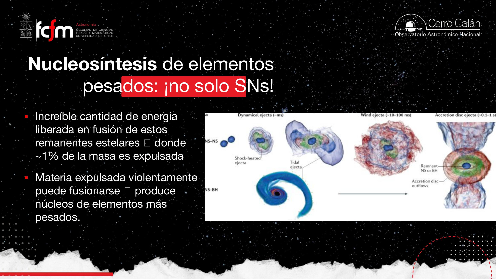
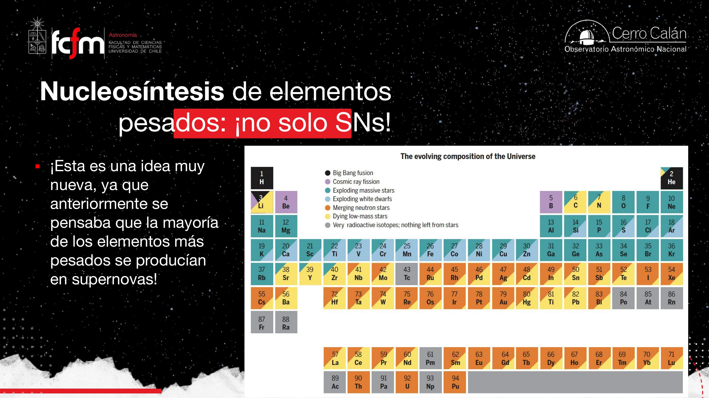
La profesora recomendó leer sobre el «problema del litio»: la cantidad de litio observada en el universo no calza con lo que debió formarse en el Big Bang, y se sigue buscando ese litio faltante. (Material externo sugerido en clase, no desarrollado.)
Coda: Interestelar y lo que no sabemos
Kip Thorne en Hollywood, agujeros negros «sin pelo» y la frontera de la física.
Gargantúa: simulaciones de verdad
Kip Thorne no solo asesoró científicamente Interestelar: la ideó y fue productor ejecutivo. Las simulaciones numéricas que produjeron la imagen del agujero negro Gargantúa corrieron durante meses, con una cantidad de recursos computacionales impresionante — y son simulaciones físicas reales, del tipo que se usa para estudiar agujeros negros.
Preguntas del cierre de la clase
- ¿Campos magnéticos? Existen agujeros negros magnéticos y no magnéticos (con y sin rotación); la tabla aparece en casi todos los libros del tema. La profesora mencionó —con honestidad sobre los límites de su especialidad— el resultado de que «los agujeros negros no tienen pelo» (pocas propiedades externas los caracterizan), y que el interior del horizonte es terreno de la física teórica: hay una rama llamada termodinámica de agujeros negros dedicada a eso.
- ¿Qué tamaño tiene la singularidad? Para que calcen las ecuaciones, una masa solar debería comprimirse a algo como la cabeza de un alfiler — y eso es justamente lo que no se entiende. Aquí es donde hay que unificar la relatividad general con la mecánica cuántica. «Por eso Estrellas termina acá».
- ¿Por dónde avanzará el campo? Telescopios más precisos podrán detectar agujeros negros más pequeños (¿rellenar el mass gap?), y seguirán las ondas gravitacionales; pero los avances de fondo vendrán del laboratorio: aceleradores de partículas y física de partículas.
El recorrido completo quedó cerrado: de la masa inicial de una estrella a su remanente — enana marrón, enana blanca, estrella de neutrones o agujero negro — y a los fenómenos que estos cadáveres estelares producen: púlsares, kilonovas, ondas gravitacionales y la nucleosíntesis de los elementos más pesados de la tabla periódica.
Explorar conceptos
Tres widgets para jugar con las ideas de la clase.
Conceptos clave
Tabla de repaso rápido.
| Concepto | Qué es / valor | Por qué importa |
|---|---|---|
| Agujero negro (clásico) | Objeto tan compacto que vescape > c | Ni la luz escapa ⇒ invisible en emisión directa |
| Condición de formación | Núcleo colapsante > ~3 M☉ (límite en debate) | Ninguna presión degenerada detiene el colapso ⇒ singularidad |
| Espacio-tiempo | Espacio y tiempo como entidad única (Einstein) | La masa lo curva; la luz sigue el camino más corto en él |
| Velocidades de escape | Tierra 11 · Sol 618 · EB 5.500 · EN 125.000 km/s | Escala con la compacidad; el BH supera c |
| Horizonte de eventos | Superficie (no anillo) sin retorno ni efecto sobre el exterior | Frontera de la información; adentro: física desconocida |
| Radio de Schwarzschild | ~3 km por cada M☉ (lineal en M) | Tamaño de referencia del agujero negro (la singularidad es inmedible) |
| Compacidad, no masa | A igual masa, igual curvatura lejana; el BH deja «caer» más adentro | Corrige el error de creer que el BH es especial por su masa |
| Ejemplos de la clase | Gaia BH1 (10 M☉, 1.500 al) · Cygnus X-1 (21 M☉, 7.000 al) · Gaia BH3 (33 M☉, 2.000 al) | Agujeros negros estelares reales; ninguno peligrosamente cerca |
| Detección en binarias | Kepler + Doppler ⇒ masa >3 M☉; disco de acreción ⇒ rayos X (>10⁸ K) | Los dos «checks» del protocolo; así se confirmó Cygnus X-1 |
| Microlente gravitacional | Amplificación tipo lupa al cruzar la línea de visión | Detecta BH aislados (y exoplanetas: segunda «colita») |
| Ondas gravitacionales | Deformaciones del espacio-tiempo radiadas por binarias compactas | Inspiral → sube frecuencia → merger (peak) → ringdown |
| LIGO | Interferómetros láser en Hanford y Livingston (~3.000 km); strain ~10⁻²¹ | Dos detectores + desfase correcto = rechazo de falsos positivos; Nobel 2017 (Weiss, Barish, Thorne) |
| Fusión no lineal | Mfinal < M₁+M₂; el déficit se radia (E = mc²) | 3+3 M☉ puede dar ~5.2 M☉, no 6 |
| Mass gap | Escasez de objetos entre ~3 y ~5 M☉ | ¿Física real o sesgo observacional? Pregunta abierta |
| Kilonova | Explosión por fusión de estrellas de neutrones; ~1% de masa expulsada | Nucleosíntesis de los elementos más pesados (¡no solo supernovas!) |
Exámenes de práctica
10 exámenes de 5 preguntas (3 de alternativas autocorregibles + 2 de respuesta escrita).
- Examen 01Espacio-tiempo y relatividad
- Examen 02Velocidad de escape
- Examen 03Horizonte de eventos
- Examen 04Compacidad y formación
- Examen 05Ejemplos y masa dinámica
- Examen 06Discos de acreción y Cygnus X-1
- Examen 07Microlentes y fusiones
- Examen 08LIGO e interferometría
- Examen 09Mass gap y kilonovas
- Examen 10Integrador